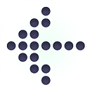
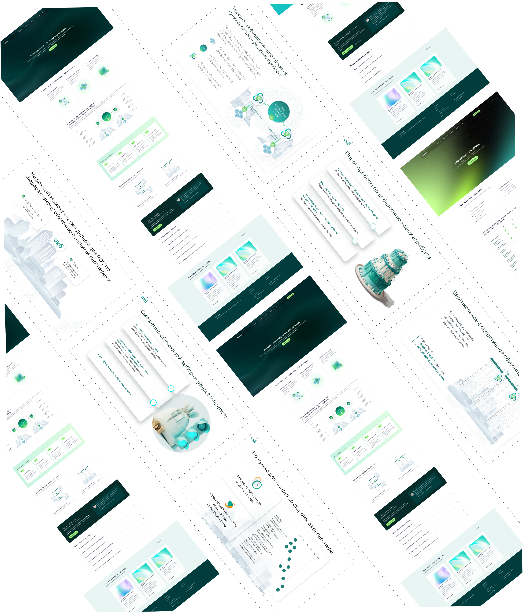

ASYA.KOMОписание проекта
оформление Презентаций, раздаточных материалов и сайтов
Федеративное обучение — это подход к машинному обучению, при котором модель обучается на распределённых данных, остающихся на стороне их владельцев, без передачи этих данных в централизованное хранилище. Взаимодействие между участниками осуществляется за счёт обмена параметрами модели или агрегированными статистиками, что позволяет сохранять конфиденциальность данных.
Горизонтальное федеративное обучение (HFL) применяется, когда участники имеют одинаковые признаки, но разные объекты (записи). Вертикальное федеративное обучение (VFL) используется, когда участники имеют разные признаки для одних и тех же объектов.
Важным компонентом таких систем является PSI (Private Set Intersection) — криптографический протокол, используемый для безопасного определения пересечения наборов идентификаторов между сторонами без раскрытия самих наборов. PSI применяется, в частности, в VFL-сценариях.
SA аналитика, тестирование технологии и принцип работы модели (DS)
Разработка документации охватывала все ключевые аспекты федеративного обучения: описание сценариев вертикального (VFL) и горизонтального (HFL) обучения, включая использование PSI (Private Set Intersection) для безопасного согласования идентификаторов между участниками. Также по логике работы фреймворков FATE и Flower.
Проведение экспериментов включало развертывание локальных экземпляров фреймворков для моделирования федеративного обучения в контролируемой среде. Для VFL проверялась корректность совместного обучения при распределении признаков между участниками, включая использование PSI (Private Set Intersection) для безопасного согласования объектов и идентификаторов без раскрытия данных. Для HFL тестировалось обучение на разных наборах объектов с одинаковыми признаками
В ходе тестирования анализировались метрики качества моделей (accuracy, AUC, F1), объём передаваемых данных и влияние конфигураций сети на производительность.
В рамках работы был проведён сравнительный анализ фреймворков. Для FATE анализ включал встроенные механизмы PSI, поддержку криптографических протоколов и готовые компоненты для VFL, что делает фреймворк более ориентированным на production-использование. Для Flower рассматривались возможности гибкой кастомной реализации PSI и федеративных протоколов, что повышает его ценность для R&D и экспериментальных сценариев, но требует дополнительных доработок для промышленного применения. В результате были зафиксированы сильные стороны, ограничения и области оптимального применения каждого фреймворка.
Мной был проведён анализ нескольких вариантов построения пайплайна обучения модели в федеративной архитектуре в рамках поддержки команды Data Science. В частности, я проработала подходы к отбору признаков как на стороне активного участника, так и на стороне дата-партнёра без раскрытия названий признаков и их доменных групп. Были рассмотрены различные варианты обработки данных, включая локальную оценку важности признаков, использование агрегированных и зашифрованных статистик, а также координацию этапов Feature Selection между сторонами. Результаты анализа использовались для выбора оптимального пайплайна обучения модели с учётом требований к приватности и совместимости с VFL-сценариями.
Мной был реализован сайт с нуля, включая разработку концепции дизайна и элементов брендинга, формирование визуального стиля и пользовательской логики. Сайт был разработан с использованием HTML, CSS и JavaScript, с акцентом на адаптивную верстку для корректного отображения на различных устройствах и экранах.
В рамках работы также было проведено согласование с законодательными требованиями (включая требования к пользовательским данным, обязательные разделы и уведомления), а также учтены внутренние корпоративные стандарты. Дополнительно выполнена SEO-оптимизация: проработка структуры страниц, мета-тегов, семантики и базовых показателей производительности, что повысило видимость сайта в поисковых системах.
Результатом работы стал функционирующий корпоративный сайт компании:
Мной был разработан комплекс маркетинговых материалов для продвижения продукта в рамках нового брендинга. В том числе было подготовлено моушен-видео для использования на конференциях, а также создано значительное количество презентаций для публичных выступлений, демо-сессий и переговоров. Дополнительно были разработаны раздаточные материалы для конференций (брошюры, инфографика и печатные материалы), выдержанные в едином визуальном стиле и соответствующие обновлённой бренд-концепции.
оформление Презентаций, раздаточных материалов и сайтов

Индивидуальный предприниматель. Данные для договора и оплаты.
Телефон: +7 906 095‑92‑95